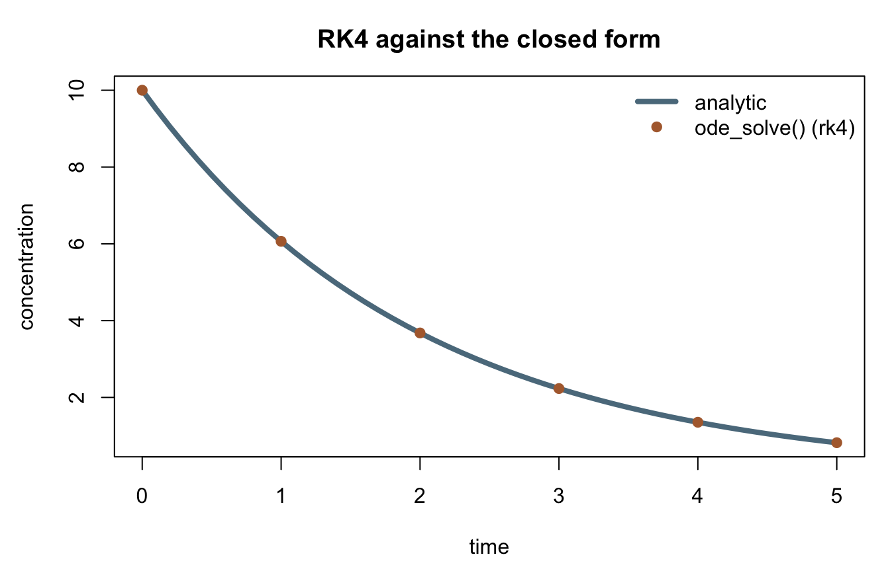
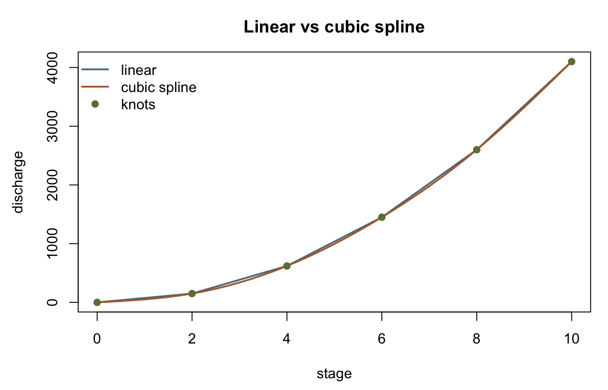

library(corehydror)18. Numerical methods
The rest of this site’s examples fit a distribution, a copula, or a model to data. This one steps back a layer, to the general-purpose numerical toolkit those fits are built on (P2 “math extras”): root finding, integration in one, two, and many dimensions plus an ODE solver, interpolation, a linear-system solve, and the two non-tabular univariate functions. None of it is specific to hydrology, so every example below borrows a hydrologic frame where one is natural rather than inventing an abstract one.
What you’ll learn
- The four methods
root_find()offers, and why Newton’s quadratic convergence lands closer to the true root than Brent’s default bracket search on the same problem. ode_solve()against a problem with a closed-form answer.- The ten
quadrature()methods compared on one integrand, and why the fixed-rule methods need more steps than their default to compete with the adaptive ones. - A seeded
quadrature_nd()Vegas run configured for a rare event withtarget_probability. interpolate()’s cubic spline against a straight line on a stage-discharge curve.- Solving a linear system with
qr_solve(), and evaluating a power law and its inverse withunivariate_function(). - Where the cross-language guarantee holds for the three stochastic integrators, and where it measurably does not.
Setup
Finding a root: Brent vs Newton
root_find() solves \(f(x) = 0\). The default, Brent’s method, and its two relatives (bisection, secant) all need a bracket – an interval over which \(f\) changes sign. Newton-Raphson needs something different: an analytic derivative and a starting guess, with the bracket optional. Both find the same root of \(f(x) = x^2 - 2\), \(\sqrt{2}\), but not to the same precision:
f <- function(x) x^2 - 2
brent <- root_find(f, lower = 0, upper = 2)
newton <- root_find(f, method = "newton", df = function(x) 2 * x, first_guess = 1)
c(brent = brent, newton = newton, true = sqrt(2)) brent newton true
1.414214 1.414214 1.414214 Newton’s quadratic convergence lands on the true value to every digit R prints; Brent’s search stops once its own default tolerance on the root (1e-8) is satisfied, which is a looser promise and leaves it a few units in the last place short – tightenable with tolerance, not a defect in either method.
The same root reappears as the intersection of a circle and a line, this time with two equations and root_find_system()’s multivariate Newton-Raphson, which needs a Jacobian instead of a scalar derivative:
circle_and_line <- function(v) c(v[1]^2 + v[2]^2 - 4, v[1] - v[2])
circle_and_line_jacobian <- function(v) matrix(c(2 * v[1], 2 * v[2], 1, -1), nrow = 2, byrow = TRUE)
root_find_system(circle_and_line, circle_and_line_jacobian, first_guess = c(1, 1))[1] 1.414214 1.414214\(x^2 + y^2 = 4\) meets \(x = y\) at \((\sqrt{2}, \sqrt{2})\), the same number as above.
An ordinary differential equation
ode_solve() steps a first-order ODE \(dy/dt = f(t, y)\) forward from an initial value. A decaying tracer concentration, \(dC/dt = -kC\), has a closed form, \(C(t) = C_0 e^{-kt}\), which makes it a clean check on the numerical solver rather than a demonstration of something otherwise unknowable:
k <- 0.5
decay <- ode_solve(function(t, c) -k * c, initial_value = 10, start_time = 0,
end_time = 5, time_steps = 51, method = "rk4")
t <- seq(0, 5, length.out = 51)
analytic <- 10 * exp(-k * t)
cat(sprintf("RK4 C(5) = %.6f, analytic = %.6f, difference = %.2e\n",
decay[51], analytic[51], decay[51] - analytic[51]))RK4 C(5) = 0.820850, analytic = 0.820850, difference = 1.11e-07op <- par(mar = c(4.5, 4.5, 3, 1))
plot(t, analytic, type = "l", col = "#5b7a8c", lwd = 4,
xlab = "time", ylab = "concentration", main = "RK4 against the closed form")
points(t[c(1, 11, 21, 31, 41, 51)], decay[c(1, 11, 21, 31, 41, 51)], pch = 19, col = "#b06a3b")
legend("topright", c("analytic", "ode_solve() (rk4)"), lty = c(1, NA), pch = c(NA, 19),
lwd = c(4, NA), col = c("#5b7a8c", "#b06a3b"), bty = "n")
par(op)Fifty steps of fourth-order Runge-Kutta agree with the closed form to about a part in \(10^7\) – method = "rkf"/"cash_karp" trade the fixed grid above for adaptive step control instead, at a tolerance you set directly.
Integrating one function ten ways
quadrature() wraps ten ported rules for \(\int_a^b f(x)\,dx\): five adaptive ("gauss_kronrod", the default; "simpsons"; "trapezoidal"; "adaptive_simpsons"; "gauss_lobatto") that subdivide until two nested estimates agree, and five fixed rules with no such refinement ("gauss_legendre", "gauss_legendre20", "simpsons_fixed", "trapezoidal_fixed", "midpoint"). All ten integrate the standard normal density over \([-3, 3]\), against the closed-form answer \(2\Phi(3) - 1 = 0.9973002039367398\):
g <- function(x) exp(-x^2 / 2) / sqrt(2 * pi)
true_value <- 2 * pnorm(3) - 1
adaptive <- c("gauss_kronrod", "simpsons", "trapezoidal", "adaptive_simpsons", "gauss_lobatto")
fixed <- c("gauss_legendre", "gauss_legendre20", "simpsons_fixed", "trapezoidal_fixed", "midpoint")
results <- data.frame(method = c(adaptive, fixed), value = NA_real_, error = NA_real_)
for (i in seq_along(adaptive)) {
q <- quadrature(g, -3, 3, method = adaptive[i])
results$value[i] <- as.numeric(q)
}
for (i in seq_along(fixed)) {
q <- quadrature(g, -3, 3, method = fixed[i]) # default steps = 2
results$value[length(adaptive) + i] <- as.numeric(q)
}
results$error <- results$value - true_value
print(results, digits = 10, row.names = FALSE) method value error
gauss_kronrod 0.9973002039 1.110223025e-16
simpsons 0.9973002037 -2.674428456e-10
trapezoidal 0.9973002027 -1.188713128e-09
adaptive_simpsons 0.9973002039 -3.984101937e-11
gauss_lobatto 0.9973002045 5.848060924e-10
gauss_legendre 0.9972997744 -4.295367841e-07
gauss_legendre20 0.9973002039 1.110223025e-16
simpsons_fixed 0.9214445115 -7.585569246e-02
trapezoidal_fixed 1.2101223864 2.128221825e-01
midpoint 0.7771055740 -2.201946299e-01The five adaptive methods agree with the true value to 8-10 digits without being told how finely to subdivide. The five fixed rules do not, at their default of two steps – "midpoint" in particular is off by two parts in a thousand. That is not a weaker method, only an unconfigured one: steps sets how many, and there is no adaptive refinement to fall back on if you leave it low.
for (m in c("simpsons_fixed", "trapezoidal_fixed", "midpoint")) {
q <- quadrature(g, -3, 3, method = m, steps = 1000)
cat(sprintf("%-16s steps=1000 value=%.10f error=%.2e\n", m, as.numeric(q),
as.numeric(q) - true_value))
}simpsons_fixed steps=1000 value=0.9973002039 error=-7.19e-14
trapezoidal_fixed steps=1000 value=0.9973001242 error=-7.98e-08
midpoint steps=1000 value=0.9973002438 error=3.99e-08At 1000 steps all three land within \(10^{-4}\) or better, "simpsons_fixed" matching the adaptive methods’ precision. quadrature_2d() is the two-dimensional sibling, an adaptive Simpson’s rule over a rectangle – \(\int_0^1\int_0^1 xy\,dx\,dy = 1/4\) exactly:
quadrature_2d(function(x, y) x * y, min_x = 0, max_x = 1, min_y = 0, max_y = 1)[1] 0.25
attr(,"status")
[1] "Success"
attr(,"function_evaluations")
[1] 25
attr(,"standard_error")
[1] 0A rare event with Vegas
quadrature_nd() reaches beyond two dimensions with three ported stochastic integrators: plain Monte Carlo (the default), Miser (recursive stratified sampling), and Vegas (adaptive importance sampling). Vegas is the one built for a rare event: target_probability calls the ported configure_for_rare_events() helper, which reshapes the sampling grid toward wherever the integrand is large rather than spending most of its budget on a region that contributes almost nothing.
The event here is the joint tail of two independent standard Normal draws, \(P(Z_1 + Z_2 > 4)\), with an analytic answer close enough to check against: \(Z_1 + Z_2 \sim N(0, 2)\), so the probability is \(1 - \Phi(4/\sqrt{2})\). method = "vegas" takes f(x, weight) rather than f(x), and mapping the unit square through the standard Normal quantile turns the integral over \([0,1]^2\) directly into a probability, with no extra scaling:
norm <- distribution("Normal", c(0, 1))
rare_event <- function(x, weight) {
z1 <- dist_quantile(norm, x[1])
z2 <- dist_quantile(norm, x[2])
if (z1 + z2 > 4) 1 else 0
}
vegas_p <- quadrature_nd(rare_event, min = c(0, 0), max = c(1, 1), method = "vegas",
seed = 12345, target_probability = 0.01)
true_p <- 1 - dist_cdf(norm, 4 / sqrt(2))
cat(sprintf("vegas estimate = %.7f, analytic = %.7f, function evaluations = %d\n",
as.numeric(vegas_p), true_p, attr(vegas_p, "function_evaluations")))vegas estimate = 0.0023316, analytic = 0.0023389, function evaluations = 490000Half a million evaluations of an indicator that is 1 on roughly one point in four hundred still lands within 1% of the analytic probability – rare-event sampling working as intended, not brute force. attr(vegas_p, "chi_squared") is Vegas’s own internal-consistency diagnostic, not a goodness-of-fit test against the true value; a value near 1 across its independent evaluations says the run’s importance grid had converged.
What reproduces across languages, and what does not
Most pages on this site can promise a seeded run gives bit-identical numbers in R and Python, because every operation happens inside the shared C++ core and both packages call the same compiled code. quadrature_nd() needs a narrower promise, measured rather than assumed, and it differs by method.
MonteCarloIntegration‘s own arithmetic – a running count of hits divided by the sample size – has no near-cancelling subtraction for a fused-multiply-add to leave a mark on, so its Result reproduces bit-for-bit in this package, in corehydropy, in the C++ fixture runner under both FMA settings, and against the real C# library; fixtures/callback/callback_cross_language.json pins it at zero tolerance for exactly that reason. Miser and Vegas are not so lucky: both compute a standard_error shaped like avg2 - avg*avg, and Vegas’s own chi_squared compounds a second such subtraction, and clang/gcc’s default fused-multiply-add contraction does not agree with .NET’s never-fused arithmetic on the last bit of either. Measured against the real C# library when the port landed (fixtures/callback/math.json’s quadrature_miser_gsl case): Miser’s own Result misses the C# value by 1 ULP under this package’s shipped build. Measured directly R against Python at the settings fixtures/callback/callback_cross_language.json itself uses for its Vegas sub-block (NdW_SumOfNormals3, independent_evaluations = 2, function_calls = 300): Result differs by 2 ULP language to language, not just in standard_error/chi_squared. It is a property of the classes’ own floating-point arithmetic, not a bug in either binding – and it is why that fixture’s quadrature_nd_short_exact case asserts function_evaluations and status on every method, Result additionally on Monte Carlo alone, and nothing else. The same three constructs, run here:
nd_pi <- function(x) if (x[1]^2 + x[2]^2 < 1) 1 else 0
monte_carlo <- quadrature_nd(nd_pi, min = c(-1, -1), max = c(1, 1), method = "monte_carlo",
seed = 999, min_iterations = 20, max_iterations = 200,
relative_tolerance = 0.1)
nd_gsl <- function(x) (1 / pi^3) / (1 - cos(x[1]) * cos(x[2]) * cos(x[3]))
miser <- quadrature_nd(nd_gsl, min = c(0, 0, 0), max = c(pi, pi, pi), method = "miser",
seed = 999, max_function_evaluations = 300)
mu20 <- c(10, 30, 17); sigma20 <- c(2, 15, 5)
sum_of_normals <- function(x, weight) {
acc <- 0
for (i in 1:3) acc <- acc + mu20[i] + sigma20[i] * dist_quantile(norm, x[i])
acc
}
vegas <- quadrature_nd(sum_of_normals, min = rep(1e-16, 3), max = rep(0.9999999999999999, 3),
method = "vegas", independent_evaluations = 2, function_calls = 300)
data.frame(
method = c("monte_carlo", "miser", "vegas"),
function_evaluations = c(attr(monte_carlo, "function_evaluations"),
attr(miser, "function_evaluations"),
attr(vegas, "function_evaluations")),
status = c(attr(monte_carlo, "status"), attr(miser, "status"), attr(vegas, "status"))
) method function_evaluations status
1 monte_carlo 21 Success
2 miser 300 None
3 vegas 500 SuccessInterpolating a stage-discharge curve
interpolate() mirrors three C# interpolaters – linear, cubic spline, and polynomial. A straight line between rating-curve knots kinks at every one of them; a cubic spline is smooth through all of them, which matters wherever the interpolated value itself gets used in something sensitive to its derivative:
stage <- c(0, 2, 4, 6, 8, 10)
discharge <- c(0, 150, 620, 1450, 2600, 4100)
stage_out <- seq(0, 10, by = 0.25)
linear_q <- interpolate(stage, discharge, stage_out, method = "linear")
spline_q <- interpolate(stage, discharge, stage_out, method = "cubic_spline")
op <- par(mar = c(4.5, 4.5, 3, 1))
plot(stage_out, linear_q, type = "l", col = "#5b7a8c", lwd = 2,
xlab = "stage", ylab = "discharge", main = "Linear vs cubic spline")
lines(stage_out, spline_q, col = "#b06a3b", lwd = 2)
points(stage, discharge, pch = 19, col = "#6b7f3f")
legend("topleft", c("linear", "cubic spline", "knots"), lty = c(1, 1, NA), pch = c(NA, NA, 19),
lwd = c(2, 2, NA), col = c("#5b7a8c", "#b06a3b", "#6b7f3f"), bty = "n")
par(op)At the knots the two agree exactly; between them the straight line always underestimates a convex stretch of the curve, which is what “linear” is doing here – connecting the dots rather than following the curvature the knots themselves imply.
A linear system
qr_solve() mirrors the C# QRDecomposition::Solve overloads: Householder QR decomposition followed by back-substitution, for a vector or a matrix right-hand side. A square system with a known integer solution is enough to see it work:
a <- matrix(c(3, 2, -1, 2, -2, 4, -1, 0.5, -1), nrow = 3, byrow = TRUE)
b <- c(1, -2, 0)
x <- qr_solve(a, b)
x[1] 1 -2 -2a %*% x # reproduces b [,1]
[1,] 1.000000e+00
[2,] -2.000000e+00
[3,] 1.110223e-15qr_decomposition() exposes the q/r factors directly, and gauss_jordan() is the alternative full-pivot route to the same kind of answer (plus, unlike qr_solve(), the matrix inverse itself).
A power function, evaluated and inverted
univariate_function() evaluates the two non-tabular Numerics IUnivariateFunction implementations. "power", \(Y = \alpha(X - \xi)^\beta\), is a power law of the shape a rating curve itself often takes; inverse = TRUE evaluates its algebraic inverse instead of the forward function, which recovers the input exactly on a deterministic call:
discharge_at_stage <- univariate_function("power", c(5, 2, 0, 3), 6)
stage_at_discharge <- univariate_function("power", c(5, 2, 0, 3), discharge_at_stage, inverse = TRUE)
c(discharge = discharge_at_stage, recovered_stage = stage_at_discharge) discharge recovered_stage
180 6 \(5 \times (6 - 0)^2 = 180\), and the inverse recovers \(6\) back exactly. "linear", \(Y = \alpha + \beta X\), is the other type; both accept confidence_level to evaluate the non-deterministic path over \(\epsilon \sim N(0, \sigma)\) instead.
Key takeaways
root_find()’s four methods split into two families: three ("brent","bisection","secant") need a bracket,"newton"needs a derivative and a starting guess. All four solve the same problem to different precisions and at different costs.- The ten
quadrature()methods are not interchangeable defaults – the five fixed rules needstepsset explicitly to compete with the five adaptive ones, which set their own refinement. quadrature_nd()’s three methods are a tradeoff between simplicity ("monte_carlo"), stratified refinement ("miser"), and importance sampling ("vegas"), and only"monte_carlo"’s aggregated result is proven to reproduce across every one of R, Python, C++, and C#.target_probabilityis what turns Vegas from a general integrator into a rare-event sampler – it reconfigures the grid toward the tail rather than requiring you to importance-sample by hand.interpolate()’s three methods diverge between knots, not at them; which one is right depends on whether the curve you are modeling actually has the smoothness a spline assumes.qr_solve(),qr_decomposition(), andgauss_jordan()all solvea %*% x = b; they differ in what else they hand back (the factors, or the inverse) and in whetheramust be square.
Reproduction check
Two halves. The first is a regression on this page’s own numbers – deterministic values, checked at 1e-15 relative tolerance since R’s decimal parser can land one ulp off a written literal. The second reruns the three quadrature_nd() constructs fixtures/callback/callback_cross_language.json itself pins against the real C# library at zero tolerance, checking only what that fixture asserts: function_evaluations and status on every method, the Result value additionally on "monte_carlo" alone – Miser’s and Vegas’s own floating-point fields are deliberately not checked here for the reason given above.
near <- \(x, literal, tol = 1e-15) abs(x / literal - 1) < tol
stopifnot(
near(brent, 1.4142135623731364),
near(newton, 1.4142135623730951),
near(as.numeric(root_find_system(circle_and_line, circle_and_line_jacobian, first_guess = c(1, 1))[1]),
1.4142135623730951),
near(decay[51], 0.82085009767073757736),
near(as.numeric(quadrature(g, -3, 3)), 0.99730020393673990409),
near(as.numeric(vegas_p), 0.0023315896197769283606),
near(discharge_at_stage, 180),
near(stage_at_discharge, 6),
near(x[1], 0.99999999999999888978),
near(x[2], -1.9999999999999971134),
near(x[3], -1.9999999999999984457),
near(spline_q[5], interpolate(stage, discharge, 1, method = "cubic_spline")),
# The callback_cross_language.json construct: EMITTER-READ from the real C# library.
identical(as.numeric(monte_carlo), 3.4285714285714284),
attr(monte_carlo, "function_evaluations") == 21L,
attr(monte_carlo, "status") == "Success",
attr(miser, "function_evaluations") == 300L,
attr(miser, "status") == "None",
attr(vegas, "function_evaluations") == 500L,
attr(vegas, "status") == "Success"
)
cat("All reproduction checks passed.\n")All reproduction checks passed.